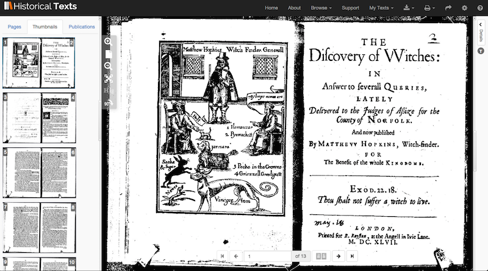
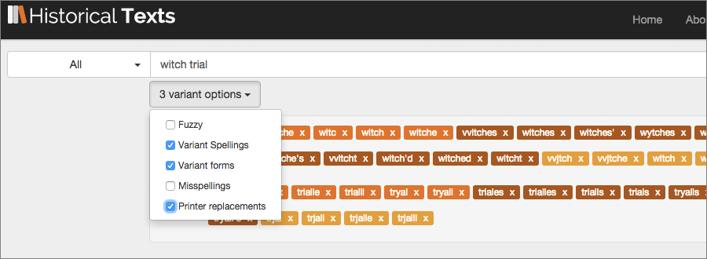
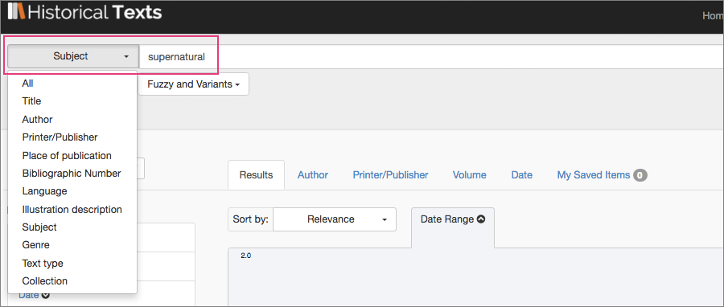
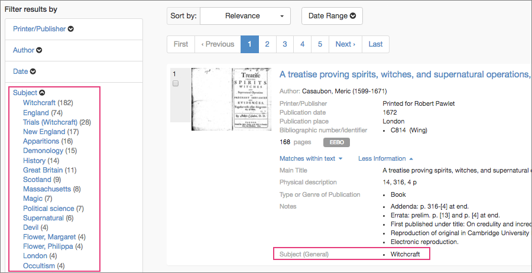

<div class="row">
    <div class="col-xs-12 topSpace">
        <div class="sideMenu">
            <div class="title">Support</div>
            <ul>
                <li><a href="">Support Home</a></li>
                <li><a href="/help/">Help File</a></li>
                <li><a href="/librarians/">Librarians</a></li>
                <li><a href="/faq/">FAQ</a></li>
				<li><a href="/quickref/">Quick Reference Guide</a></li>
				<li><a href="/features/">Features</a>
													 <ul>
            <li><a href="/astronomy">Astronomy</a></li>
            <li><a href="/blcovers">British Library Covers</a></li>
            <li><a href="/christmas">Christmas</a></li>
			<li><a href="/cookery">Cookery</a></li>
	     	<li><a href="/locallondon">Local History&#58; London</a></li>
			<li><a href="/maps">Maps</a></li>
			<li><a href="/music">Music</a></li>
            <li><a href="/stem">Science, Technology and Engineering</a></li>                                                         
            <li><a href="/shakespeare">Shakespeare</a></li>
            <li><a href="/travel">Travel and Explorers</a></li>		
            <li class="selected"><a href="/witchcraft">Witchcraft</a></li>
            </ul>
			</li>
			
            </ul>
        </div>

        <div class="support">

            <ol class="breadcrumb">

				    <li><a href="/features/">Features</a></li>
                    <li class="active">Witchcraft</li>

            </ol>

           <h1>Witchcraft and magic</h1>
           
          
           <p class="lead">If you&#39;re researching the history of witchcraft or magic&#44; or simply just interested in the subject matter&#44; you&#39;ll find there&#39;s lots to discover in Historical Texts. From books on magic tricks and witch trials to spells and potions&#44; ghosts and the supernatural including texts by Daniel Defoe&#44; the witch hunter Matthew Hopkins and the skeptic Reginald Scott. This feature highlights some of the content available in Historical Texts, along with direct links to selected texts and search results as well as tips on how to explore the resource further.</p>
		
        
       <p>The Discovery of Witches (Matthew Hopkins, 1647)</p>
       
<h2>Witchcraft</h2>
<p>Discover insghts into how and why people were classed as witches&#44; find out about witch hunters&#44; witch trials&#44; witchcraft acts and much much more.</p>
       
<div class=row> <div class="col-sm-6 col-md-3"> <div class=thumbnail>  <div class=caption> <h3>The discouerie of witchcraft</h3> <p>Author&#58; Reginald Scott</p><p>Published&#58; 1584</p> <p><span class="badge">EEBO</span></p><p><a href=https://historicaltexts.jisc.ac.uk/eebo-99852103e class="btn btn-primary" role=button>View text</a> </p> </div> </div> </div> 

<div class=row> <div class="col-sm-6 col-md-3"> <div class=thumbnail>  <div class=caption> <h3>The history of the Lancashire Witches</h3> <p>Printed and sold in Aldermary...</p><p>Published&#58; 1780</p> <p><span class="badge">ECCO</span></p><p><a href=https://data.historicaltexts.jisc.ac.uk/view?pubId=eccoii-1306100100&index=eccoii&pageId=eccoii-1306100100-190 class="btn btn-primary" role=button>View text</a> </p> </div> </div> </div> 

<div class=row> <div class="col-sm-6 col-md-3"> <div class=thumbnail>  <div class=caption> <h3>Witchcrafts, strange and wonderfull</h3> <p>Printed by M.F. for Thomas Lambert... </p><p>Published&#58; 1635</p> <p><span class="badge">EEBO</span></p><p><a href=https://historicaltexts.jisc.ac.uk/eebo-ocm54532351e class="btn btn-primary" role=button>View text</a> </p> </div> </div> </div>
  

</div></div></div>

 <div class=row> <div class="col-sm-6 col-md-3"> <div class=thumbnail>  <div class=caption> <h3>The discovery of vvitches in answer to severall queries</h3> <p>Author&#58; Mathew Hopkins</p><p>Published: 1647</p> <p><span class="badge">EEBO</span></p><p><a href=https://historicaltexts.jisc.ac.uk/eebo-99862000e class="btn btn-primary" role=button>View text</a></p> </div> </div> </div> 

<div class=row> <div class="col-sm-6 col-md-3"> <div class=thumbnail>  <div class=caption> <h3>VVitches apprehended, examined...</h3> <p>Printed by William Stansby...</p><p>Published&#58; 1613</p> <p><span class="badge">EEBO</span></p><p><a href=https://historicaltexts.jisc.ac.uk/eebo-99855391e class="btn btn-primary" role=button>View text</a></p> </div> </div> </div> 

<div class=row> <div class="col-sm-6 col-md-3"> <div class=thumbnail>  <div class=caption> <h3>The lawes against vvitches, and conivration</h3> <p>Printed for R.W</p><p>Published&#58; 1645</p> <p><span class="badge">EEBO</span></p><p><a href=https://historicaltexts.jisc.ac.uk/eebo-99834909e class="btn btn-primary" role=button>View text</a> </p> </div> </div> </div> 
           
           </div></div></div>

<h2>Magic</h2>
<p>Read about the history of magic and sorcery or try your hand at an old magic trick&#33; </p>

 <div class=row> <div class="col-sm-6 col-md-3"> <div class=thumbnail>  <div class=caption> <h3>The complete history of magic, sorcery and witchcraft</h3> <p>Author&#58; Richard Boulton</p><p>Published&#58; 1715&#45;16</p> <p><span class="badge">ECCO</span></p><p><a href=https://historicaltexts.jisc.ac.uk/ecco-0538900501 class="btn btn-primary" role=button>View text</a></p> </div> </div> </div> 
 
 <div class=row> <div class="col-sm-6 col-md-3"> <div class=thumbnail>  <div class=caption> <h3>The whole art of legerdemain&#59; or, hocus pocus in perfection</h3> <p>Author&#58; Henry Dean</p><p>Published&#58; 1756</p> <p><span class="badge">ECCO</span></p><p><a href=https://historicaltexts.jisc.ac.uk/ecco-0723500500 class="btn btn-primary" role=button>View text</a> </p> </div> </div> </div>
  
 <div class=row> <div class="col-sm-6 col-md-3"> <div class=thumbnail>  <div class=caption> <h3>Magick &#38; astrology vindicated from those false aspersions</h3> <p>Author&#58; Hardick Warren</p><p>Published&#58; 1651</p> <p><span class="badge">EEBO</span></p><p><a href=https://historicaltexts.jisc.ac.uk/eebo-99865530e class="btn btn-primary" role=button>View text</a> </p> </div> </div> </div> 
 </div></div></div>

<h2>Supernatural</h2>
<p>Explore historical ideas on <a href="https://historicaltexts.jisc.ac.uk/results?terms=devil" title="devil search">devils</a>, <a href="https://historicaltexts.jisc.ac.uk/results?field=author&terms=demon" title="demon search">demons</a> and the occult including <a href="https://historicaltexts.jisc.ac.uk/results?field=author&terms=daniel%20defoe" title="Daniel Defoe search">Daniel Defoe</a>&#39;s works on the <a href="https://historicaltexts.jisc.ac.uk/results?terms=supernatural" title="supernatural search">supernatural</a> as well as ghost stories and poems about hauntings.</p>

  <div class=row> <div class="col-sm-6 col-md-3"> <div class=thumbnail>  <div class=caption> <h3>The political history of the Devil</h3> <p>Author&#58; Daniel Defoe</p><p>Published&#58; 1726</p><p><span class="badge">ECCO</span></p><p><a href=https://historicaltexts.jisc.ac.uk/ecco-0077000200 class="btn btn-primary" role=button>View text</a> </p> </div> </div> </div> 
  
 <div class=row> <div class="col-sm-6 col-md-3"> <div class=thumbnail>  <div class=caption> <h3>Daemonologie</h3> <p>Author&#58; James I. King of England</p><p>Published&#58; An. 1597. Cum privilegio regio</p> <p><span class="badge">EEBO</span></p><p><a href=https://historicaltexts.jisc.ac.uk/eebo-99843273e class="btn btn-primary" role=button>View text</a> </p> </div> </div> </div>   
  
<div class=row> <div class="col-sm-6 col-md-3"> <div class=thumbnail>  <div class=caption> <h3>The Night Side of Nature</h3> <p>Author&#58; Catherine Crowe</p><p>Published&#58; 1882</p> <p><span class="badge">BL</span></p><p><a href=https://data.historicaltexts.jisc.ac.uk/view?pubId=bl-000827510&index=bl&pageId=bl-000827510-619438-7 class="btn btn-primary" role=button>View text</a> </p> </div> </div> </div> 

</div></div></div>

<div class=row> <div class="col-sm-6 col-md-3"> <div class=thumbnail>  <div class=caption> <h3>The sixth book of Practical physick Of occult</h3> <p>Author&#58; Daniel Sennert</p><p>Published&#58; 1662</p> <p><span class="badge">EEBO</span></p><p><a href=https://data.historicaltexts.jisc.ac.uk/view?pubId=eebo-99832430e&terms=occult&pageTerms=occult&pageId=eebo-99832430e-36903-1 class="btn btn-primary" role=button>View text</a> </p> </div> </div> </div> 

  <div class=row> <div class="col-sm-6 col-md-3"> <div class=thumbnail>  <div class=caption> <h3>A new dictionary of the English language&#58;</h3> <p>Author&#58; W. &#40;William&#41; Kenrick</p><p>Published&#58; 1773</p> <p><span class="badge">ECCO</span></p><p><a href=#https://data.historicaltexts.jisc.ac.uk/view?pubId=ecco-0243600100&index=ecco&pageId=ecco-0243600100-2420 class="btn btn-primary" role=button>View text</a> </p> </div> </div> </div> 
  
  <div class=row> <div class="col-sm-6 col-md-3"> <div class=thumbnail>  <div class=caption> <h3>Cock&#45;lane, humbug</h3> <p>Publication place&#58; London</p><p>Published&#58; 1762</p> <p><span class="badge">EEBO</span></p><p><a href=https://historicaltexts.jisc.ac.uk/eebo-ocm99893180e class="btn btn-primary" role=button>View text</a> </p> </div> </div> </div>  
  
</div></div></div>
          
<h2>Halloween</h2>
<p>Find out about historical traditions surrounding <a href="https://historicaltexts.jisc.ac.uk/results?terms=halloween" title="Halloween">Halloween</a>, or <a href="https://historicaltexts.jisc.ac.uk/results?terms="All%20Hallows%20Eve"" title="All Hallows' Eve">All Hallows&#39; Eve</a> as it was previously known. </p>
 
 <div class=row> <div class="col-sm-6 col-md-3"> <div class=thumbnail>  <div class=caption> <h3>The Book of Days. A miscellany...</h3> <p>Author&#58; Robert Chambers</p><p>Published&#58; 1864</p> <p><span class="badge">BL</span></p><p><a href=https://data.historicaltexts.jisc.ac.uk/view?pubId=bl-000654971-02&index=bl&pageId=bl-000654971-02-1111878-534 class="btn btn-primary" role=button>View text</a> </p> </div> </div> </div> 
 
 <div class=row> <div class="col-sm-6 col-md-3"> <div class=thumbnail>  <div class=caption> <h3>Poems &#38; Songs by Robert Burns</h3> <p>Author&#58; Robert Burns</p><p>Published&#58; 1893</p> <p><span class="badge">BL</span></p><p><a href=https://data.historicaltexts.jisc.ac.uk/view?pubId=bl-000543333&index=bl&pageId=bl-000543333-564907-100 class="btn btn-primary" role=button>View text</a> </p> </div> </div> </div>  
 
  <div class=row> <div class="col-sm-6 col-md-3"> <div class=thumbnail>  <div class=caption> <h3>Ayrshire Nights' Entertainments</h3> <p>Author&#58; John Antiquarian Macintosh</p><p>Published&#58; 1894</p> <p><span class="badge">BL</span></p><p><a href=https://historicaltexts.jisc.ac.uk/bl-002318763 class="btn btn-primary" role=button>View text</a> </p> </div> </div> </div> 
  
</div></div></div>           

<h2>Search tips</h2>

<p>Terms like witch, witchcraft and trial often have various spellings in earlier times e.g. &#39;tryall&#44; trial&#44; trialle&#44; witche&#44; witchcraft&#44; witch-craft&#39; so you may want to include variant spellings along with variant forms and printer substitutions to pick up results for these as well. Printer substitutions are where a printer may have run out of a particular letter and substituted another for it&#44; for instance in some cases two of the letter &#39;v&#39; was used instead of a letter &#39;w&#39; as in &#39;vvitches&#39;.</p>


<br />
<p>EEBO has classifications for subject areas like <a href="https://historicaltexts.jisc.ac.uk/results?field=subject&terms=Witchcraft" title="witchcraft subject search">witchcraft</a>&#44; <a href="https://historicaltexts.jisc.ac.uk/results?field=subject&terms=Trials%20(Witchcraft)" title="trials (witchcraft) search">trials (witchcraft)</a>&#44; <a href="https://historicaltexts.jisc.ac.uk/results?field=subject&terms=demonology" title="demonology subject search">demonology</a> &#44; <a href="https://historicaltexts.jisc.ac.uk/results?field=subject&terms=occultism" title="occultism subject search">occultism</a>&#44; <a href="https://historicaltexts.jisc.ac.uk/results?field=subject&terms=supernatural" title="supernatural subject search">supernatural</a> and <a href="https://historicaltexts.jisc.ac.uk/results?field=subject&terms=magic" title="magic subject search">magic</a>&#44; so you can search directly for all EEBO texts from these categories by using the subject search option in the drop down menu to the left of the search box and entering a subject area. </p>



<p>You can also use the filter options on the left to refine your results further by subject category.</p>



        
        
        </div>
        </div>
    </div>